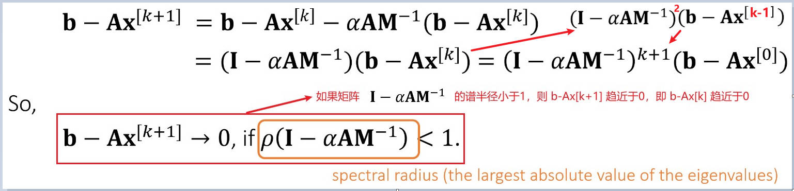

PhysicalBasedAnimation
Table of Contents
- 基于物理的计算机动画入门
- Intro to Physics-Based Animation
- Math Background: Vector, Matrix and Tensor Calculus
- Rigid Body Contacts（Lab 1 ）
- Mass-Spring Systems
- Constrained Approaches: PBD, PD and others （Lab 2 ）
- Collision Handling
- Soft Body Dynamics and Finite Element Method （Lab 3）
- Surface Waves （Lab 4）
- Incompressible Fluid Dynamics and Eulerian Fluids
- SPH and Position-Based Fluids
- 参考资料
- 基于物理的计算机动画入门作业
- 高级物理引擎实战指南 2020
- PhysicalBasedAnimation
- Harmonic Oscillator 简谐振子
- Mechanical Energy 机械能
- Conservation Laws 守恒定律
- Symplecticity
- Numerical Integration
- Integrator Properties
- Solving Implicit Integrators
- Optimization
- Newtons Method
- Nonconvexity
- Direct Solvers
- Iterative Methods
- Finite Elements
- FE Potential
- Final FEM notes and Wrap up
- Constraints
- 参考资料
PhysicalBasedAnimation note.
<!– more –>
基于物理的计算机动画入门
Intro to Physics-Based Animation
What’s computer graphics?
计算机图形学分为三个部分：
- Geometry : Modeling the 3D World
- Animation : Animate the 3D World
- Rendering : Visualize the 3D World
下图为实时图形学整体的管线：

Geometry 的表示-Mesh
- mesh 由顶点和元素构成。顶点就是节点，元素可以是三角形、多边形、四面体等等
- 三角形 mesh 是当前图形学的基础。显卡都是基于三角形 mesh 所设计的
- 相关的问题 :
- 构建 mesh(meshing) : Delaunay triangulation
- 简化 mesh、细分 mesh
- mesh 优化 : smoothing, flows
- volume mesh
- 构建 mesh(meshing) : Delaunay triangulation
- mesh 又分为两种类型：Structured Mesh 和 Unstructured Mesh

Geometry 的表示-Point Cloud
- 点云表示几何体很简单，表面扫描就可以得到点云表示的几何体
- 相关的问题 :
- 从点云构造 Mesh
- 对点云进行采样
- 从点云构造 Mesh
Geometry 的表示-Grid
- 使用 grid 对整个空间进行分割，每个 cell 存储对应点的物理信息
- 体积扫描(如 CT)可以获得 grid 表示的几何体
- 相关的问题 :
- grid 表示几何体内存占用比较大，如何优化？
- 体积渲染
- grid 表示几何体内存占用比较大，如何优化？
Animation
动画分为角色动画(Character Animation)和基于物理的动画(Physics-Based Aniamtion)
Rendering
渲染分为两大类：真实感渲染和非真实感渲染
材质是渲染相关的一个重要话题。材质扫描（物体、人）
What’s physics-based animation?
动画的范式
动画的目的是在每段时间间隔内更新物体的状态。被更新的状态可以是 位置、朝向、速度、外观、密度等等。time step 不必和 frame rate 相匹配，通常动画的 time step 要比渲染的 time step 要小，即动画帧率大于渲染帧率。
Physics-based Aniamtion 研究的内容
下图展示了基于物理动画的研究内容：
SIGGRAPH 2013 A Material Point Method for Snow Simulation 论文中使用 Hybrid Method 来模拟雪。
下图展示了本课程所设计的内容：
Math Background: Vector, Matrix and Tensor Calculus
Vector
- 利用 Vector 点积表示平面
- 利用 Vector 叉积判断点是否在三角形内
- 利用 Vector 叉积计算 barycentric coordinates
- 利用 Vector 表示四面体, 求四面体内一点的 barycentric weights
- 利用 Vector 检测运动粒子和三角形的相交
Matrix
Singular Value Decomposition
一个矩阵 A 可以被分解为 UDVT。U和 V 为正交矩阵，D为对角矩阵。
奇异值分解的直观解释： 任何一个线性变形都可以被分解为三个步骤，1 旋转(U),2 缩放(D),3 旋转(VT)

Eigenvalue Decomposition
图形学中只考虑对称矩阵的特征值分解。对称矩阵（Symmetric Matrices）是指以主对角线为对称轴，各元素对应相等的矩阵。
一个对称矩阵 A 可以被分解为 UDU-1。U为特征向量组成的正交矩阵，D为特征值组成的对角矩阵。
非对称矩阵 A 也可以进行特征值分解，此时特征值和特征向量为虚数。
Symmetric Positive Definiteness (s.p.d)
对于任意不等于 0 的向量 v，如果 vTAv > 0, 则对称矩阵 A 对称正定(symmetric positive definiteness)
对于任意不等于 0 的向量 v，如果 vTAv >= 0, 则对称矩阵 A 对称半正定(symmetric semi-definite)
上面定义的直观理解：
- 矩阵 A 特征值都大于 0 则矩阵 A 是正定的(Positive Definiteness)。通常不使用特征值分解来判断矩阵是否是正定的，因为这样特征值分解比较耗时
- 对角占优的矩阵是正定的，但正定矩阵不一定是对角占优的
- s.p.d 矩阵是可逆的

Linear Solver
很多数值计算问题最终都会被化解为求解一个线性系统，一个线性系统可以被形式化地表示为：

- A 为方阵
- x 为未知量
- b 为边界条件
如果可以直接计算 A-1，则 x = A{-1}b
但是，A-1的计算通常比较耗时，而且如果 A 为稀疏矩阵，A{-1}可能不是稀疏矩阵，则存储 A{-1}占用的空间会比较多。
通常有两种方法来求解线性系统：直接法(direct)和迭代法(iterative)
Direct Linear Solver
直接法通常会基于 LU 分解或 LU 分解的变种(Cholesky,LDLT 等等)。LU 分解和其变种的差别主要在内存占用上，LU 分解 > LDLT > Cholesky
LU 分解就是将矩阵 A 分解为上三角矩阵和下三角矩阵：
LU 分解求解线性系统的原理如下：

直接法的特点：
- 如果 A 是稀疏矩阵，L和 U 稀疏性会减低。稀疏性和矩阵的行列的排列有关
- 直接法分两部：1 LU 分解；2 求解。如果多个问题公用 A，则第一步 LU 分解可以被公用
- LU 分解部分被不易于并行
Iterative Linear Solver
迭代法的基本形式是每次迭代对 x 进行更新，如：一开始知道 x0, 对其更新一次后得到 x1，再更新一次后得到 x2，迭代多次后，xn 就是满足 Ax=b 条件的 x。形式化表示如下图：

若 b-Ax[k] 趋近于 0 时，上面迭代法收敛，通过考察 b-Ax[k+1] 来进一步细化迭代法的收敛条件：

上面形式化的表达式中的矩阵 M 是迭代矩阵，矩阵 M 的逆矩阵必须是容易被求解的，因此 M 的选择为矩阵 A 的对角矩阵或矩阵 A 的下三角矩阵：

和直接法相比，迭代法的优缺点如下：

Tensor Calculus
一阶导数
一元函数的微分、导数
二元函数的偏微分、方向导数、梯度
多元向量值函数、多元向量值函数的偏微分组成的雅可比矩阵、散度(通量密度)、旋度(环流量密度)

二阶导数
多元函数的二阶偏微分组成的 Hessian 矩阵、Lapacian

Taylor Expansion
下图为一元函数和多元函数的泰勒展开

- 如何通俗地解释泰勒公式？ https://www.zhihu.com/question/21149770
- 如何通俗地解释泰勒公式？ https://www.matongxue.com/madocs/7
- 使用泰勒展开求积分 https://zhuanlan.zhihu.com/p/250461761
Examples
向量长度的偏导数
向量长度的偏导数为向量转置后的单位向量，梯度的方向为偏导数向量的转置，因此向量长度的梯度为向量对应的单位向量，即沿着向量方向生长，向量的长度变长。
A Spring
能量求导得到力，力求导得到 stiffness（stiffness 是 Hessian 矩阵）：

上面 Tangent stiffness 的推导如果看不懂，可以直接看视频讲解。
A Spring with Two Ends
弹簧两端都可以移动的情况：

Rigid Body Contacts（Lab 1 ）
刚体只允许平移和旋转两种运动，这两种运动不会让物体产生形变。
Rigid Body Simulation
模拟刚体就是随着时间不断更新刚体的状态变量。图示如下：

Translational Motion
只考虑平移运动时，物体的状态变量包括：位置和速度。使用下面方法，利用 t0 时刻的状态，求出 t1 时刻的状态：

从上图可以看出，模拟涉及到的主要运算就是求积分。
Integration Methods
显式 Euler 方法求积分如下：(该方法一阶正确)

隐式 Euler 方法求积分如下：(该方法一阶正确)

上述泰勒展开的推导：

Mid-point 方法求积分如下：(该方法二阶正确)

Apply Intergration For Translational Motion
显式、隐式方法（半隐式方法）：

Leapfrog 方法：
Types of Forces

Rotational Motion
Rotation Represented
矩阵表示旋转的优缺点：
- 优点:
- 使用矩阵和向量的乘法就可以表示物体的旋转
- 使用矩阵和向量的乘法就可以表示物体的旋转
- 缺点
- 3x3 矩阵有 9 个元素，而旋转只有 3 个自由度，因此矩阵表示旋转有很多冗余
- 不直观
- 定义旋转速度比较困难
- 3x3 矩阵有 9 个元素，而旋转只有 3 个自由度，因此矩阵表示旋转有很多冗余
欧拉角表示旋转的优缺点：
- 优点：
- 直观
- Unity 用户操作界面中使用了欧拉角表示旋转，euler 角所使用的旋转顺序为：Z，X，Y
- 直观
- 缺点：
- 存在万向锁问题
- 定义旋转速度比较困难
- 存在万向锁问题
Quaternion
在复数系统中，a+bi 可以表示一个二维的点，a+bi+cj+dk 可以表示一个三维的点。
四元数计算法则如下：

四元数表示旋转可以避免万向锁、而且定义旋转速度比较容易。
关于四元数详情，请参考 ComputerGraphicMath 中 Quaternions 部分
Torque and Inertia
力矩描述了力所引起的旋转的趋势。力矩越大旋转越强烈、力矩越小旋转越弱。(等价于平移运动中的力)
转动惯量(Inertia)描述了对旋转趋势的抵抗。和质量不同，转动惯量不是一个常数，其为一个矩阵。(等价于平移运动中的质量)
Translational and Rotational Motion
Particle Collision Detection and Response
质点的碰撞检测和响应。
有符号的距离函数（signed distance function）来描述一个点到表面的距离。符合指示了点在表面的哪一侧。

使用有符号距离函数的具体实例：
Penalty methods
Penalty 方法首先检测当前是否发生碰撞，若发生则应用一个力将粒子弹开。
当使用的力和粒子进入物体的距离为线性关系时，此时的能量和进入物体的距离为二次关系，因此称该 Penalty 方法为 Quadratic Penalty Method.

上面的方法中，无论 k 多大都无法严格避免穿透，因为只有穿透时，才会应用 Penalty 力将粒子弹开。因此，可以在表面之上增加一个缓存区，进入缓冲区就对粒子应用 Penalty 力。

上面的方法中，当 k 比较小时，若粒子猛烈撞向物体时，粒子依然有可能进入物体内；当 k 比较大时，粒子缓缓撞向物体时，粒子可能会被弹很远（overshooting 问题）。
为了缓解这些问题，可以将 k 和碰撞距离关联起来，碰撞距离越小 k 越大，碰撞距离越大 k 越小。新的方法被称为 Log-Barrier Penalty Method。

上面方法无法完全避免 overshooting。而且当粒子穿透物体时，会越陷越深，因此需要小步长来保证不会发生穿透。
Summary of Penalty Methods
- 使用 Penalty 方法，通常都需要调整步长
- 调整步长用于避免 overshooting
- 在 log-barrier 方法中，调整步长用于避免穿透
- 调整步长用于避免 overshooting
- log-barrier 方法可以和 buffer 相结合
- Penalty 方法无法处理摩擦交互
Impulse methods
Penalty 方法是通过施加力来起作用的，力的影响会在下一帧生效，其不会在当前帧影响物体的位置和速度。
Impulse 方法则是在碰撞发生时立刻对位置和速度进行修改。

刚体一般使用 Impulse 方法，衣服和弹性体一般使用 Penalty 方法。物理世界中，本质上碰撞是由于分子之间的互斥导致的，摩擦是由于表面的不平整导致的。
Rigid Collision Detection and Response by Impulse
由多个顶点组成的物体，循环判断每个顶点的碰撞情况来进行处理。但是，更新每个顶点的位置、速度、朝向、角速度是不可行的，最终，还是需要修改刚体整体的位置、速度、朝向以及角速度。
整个算法流程如下：

实现注意事项：
- 当同时有多个点产生碰撞时，取多个点位置的平均值，来进行碰撞计算。如果多个点都进行单独处理的化，会导致冲量过大。
- 当存在重力时，使得速度永远都有一个往下的量，而碰撞的冲量又使得物体反弹。这样就使得物体在平面上反复振荡（oscillation）, 可以通过衰减 μN 来减少 oscillation.
- 为什么不直接更新位置？
- 因为位置不是线性问题
- 在后续讲约束时，会再讲该问题 TODO
- 因为位置不是线性问题
多个物体接触的情况：

Shape Matching method
Shape Matching 方法的背后理念：假设刚体可以变形，单独模拟刚体每个顶点的运动，然后，再将物体变回原来的形状。如下图所示：
数学原理描述如下：
整体的实现如下：

优缺点
- 易于实现，和其他质点系统容易结合（如：衣服，软体，粒子流体, 前面这些都是基于质点进行模拟的）
- 不易于严格满足所有的约束（例如，摩擦的约束）
- 通常不需要精确的摩擦、或碰撞时，可以使用该方法（例如：衣服上的扣子）
Mass-Spring Systems
Spring
下面为质点弹簧系统的理论基础：
下面为利用质点弹簧系统构造结构化的质点弹簧网络来实现模拟。

下面为利用质点弹簧系统构造非结构化的质点弹簧网络来实现模拟。
下面为三角形表示的物体时，质点弹簧系统的构造：

Explicit Integration
Implicit Integration
Newton-Raphson Method

Simulation by Newton's Method
Spring Hessian

Positive Definiteness of Hessian

Enforcement of Positive Definiteness

Jacobi Method

Bending and Locking Issues
The Bending Spring Issues

A Dihedral Angle Model
A Quadratic Bending Model

The Locking Issues
目前为止，我们讨论模拟模型(质点弹簧模型、其他弯曲模型)时，假设拉伸和弯曲是互相独立的。现实情况也是如此，例如，纸可以弯曲但不可以拉伸。

Shape Matching
TODO
Constrained Approaches: PBD, PD and others （Lab 2 ）
约束用于解决模拟和真实世界差异的问题。
Position Based Dynamics
The Stiffness Issue


PBD

Strain Limiting
PBD 直接利用投影方法来模拟顶点运动，StrainLimiting 只是利用投影方法来修正顶点位置。
Spring Strain Limit

Triangle Area Limit
Strain Limiting in Simulation
Projective Dynamics
PBD 直接利用投影方法来修改顶点位置。Projective Dynamics 则利用投影方法计算出新的顶点位置后，利用新的顶点位置构造一个能量函数。

Constrained Dynamics
前面的方法中，模拟 stiffness 非常大的物体时，需要迭代的次数非常多。该方法用于使用很少的迭代次数，就可以模拟 stiffness 非常大的物体。

Constrained Dynamics 通常用于模拟 articulated rigid body, 也被称为 ragdoll animation(布娃娃动画)
articulated rigid body 假设人体是由多个刚体组成，刚体有一系列约束。
Stable Constrained Dynamics
隐式积分的方法中缺失了 geometric stiffness matrix，添加该 stiffness matrix 可以让 constrained dynamics 更加稳定。
TODO
Summary
Collision Handling
Soft Body Dynamics and Finite Element Method （Lab 3）
Linear Finite Element Method
有限元方法
strain 是一个数学的量，用来描述物体的形变，其可以为一个实数（如，物体为一维的弹簧），其也可以为一个矩阵（如，上面描述的三维中的三角形）

能量对位移求导得到的是力，上面能量密度对形变求导应该类似地对应于力的密度，力的密度矩阵被称为 stress tensor。

Finite Volume Method
有限体积方法和有限元方法是等价的。
有限体积方法本质上基于力从何而来。假如两个弹性体被一个界面分割，为了计算界面上的总的力，假设界面上单位面积的力为 traction t，则界面上总的力，就为 traction t 在整个界面上的积分。通过 stress tensor 矩阵可以求出 traction 力。

现在只剩下柯西 stress tensor 是未知的，下面为柯西 stress tensor 的求解:

本节的 stress tensor 和上一节的 stress tensor 有稍微差别，上节课的 stress tensor 为未形变时的 stress tensor，而本节课的 stress tensor 为形变后的 stress tensor。
Sumarry

Hyperelastic Models
个性同性的材质横着拉和竖着拉形变是相同的（具有旋转不变性），如橡胶。因此 stress tensor P 中的旋转矩阵 U 和 V^T 可以被提出来。


Summary

Nonlinear Optimization

下降方法的性能分析：

Summary
Surface Waves （Lab 4）
Two Types of Simulation Approaches

前面学过的刚体、布料、弹性体模拟都属于拉格朗日方法
今天将会学习的高度场模型属于欧拉方法
A Height Field Model
高度场模型无法模拟一个位置对应多个高度值的情况。因此，2D 情况下称对应的高度场为 1.5D，3D 情况下称对应的高度场为 2.5D。

Shallow Wave Equation
上面将公式变换最终将速度场移除，从而可以在只使用高度场的情况下对水面进行模拟。
Finite Differencing
Second-Order Derivatives
Discretized Shallow Wave Equation
Volume Preservation

结合下面压强的定义，可以更容易上面的公式。
Pressure
Viscosity
前面刚体动力学中位置的更新方式为:
x(t0+dt) = x(t0) + v(t0)*dt
v(t0) = (x(t0)-x(t0-dt))/dt
x(t0+dt) = x(t0) + x(t0) - x(t0-dt)
结合上面推导，可以理解下面公式：

Boundary Conditions

Two-Way Coupling
流体和刚体的耦合是双向的。流体对刚体有浮力，刚体会占用流体的空间。
刚体对流体的影响如下：

流体对刚体的浮力影响如下：
Incompressible Fluid Dynamics and Eulerian Fluids
SPH and Position-Based Fluids
参考资料
- http://games-cn.org/games103/
- Bilibili 视频主页 https://www.bilibili.com/video/BV12Q4y1S73g?spm_id_from=444.41.0.0
- Physically Based Modeling https://graphics.pixar.com/pbm2001/
- 王华民老师主页 https://web.cse.ohio-state.edu/~wang.3602/index.html
基于物理的计算机动画入门作业
homework01
作业 1 使用两种方法对刚体进行模拟。
Impulse 方法：
- 根据力计算出速度 (重力、空气阻力)
- 判断刚体和表面是否产生碰撞
- 计算碰撞导致的冲量
- 依据冲量更新速度
- 依据冲量更新角速度
- 计算碰撞导致的冲量
- 利用速度和角速度更新刚体的位置和旋转
ShapeMatching 方法
- 对组成刚体的每个顶点单独进行模拟
- 根据力计算出顶点的速度
- 根据顶点的速度更新顶点的位置
- 根据力计算出顶点的速度
- 判断刚体和表面是否产生碰撞
- 计算碰撞导致的 Penalty 力
- 计算碰撞导致的 Penalty 力
- 将变形后的刚体重新变回原来形状
- 计算变形后刚体的中心
- 计算变形对应的矩阵，并取出其中旋转部分
- 利用新的中心和旋转矩阵求出刚体新的位置
- 计算变形后刚体的中心
ERROR ShapeMatching 模拟中兔子没有旋转效果
一开始以为构建 Shape Matching 矩阵时是以前一次模拟的结果为起点构造的。实际上每次构建 Shape Matching 矩阵都是以一开始的状态为起点。仔细分析一下，就算以前一次模拟为起点构造也没错，但是，对应后续的 QQt.inverse 矩阵也应该以前一次模拟结果为起点进行更新。而以起始状态为起点构建可以省去 QQt 的更新，因此以起始状态为起点构造 Shape Matching 矩阵更高效。
// 错误的方式 Vector3 YiMinusC = Y[i] - c; mat1.m00 += YiMinusC.x * X[i].x; mat1.m01 += YiMinusC.x * X[i].y; mat1.m02 += YiMinusC.x * X[i].z; mat1.m10 += YiMinusC.y * X[i].x; mat1.m11 += YiMinusC.y * X[i].y; mat1.m12 += YiMinusC.y * X[i].z; mat1.m20 += YiMinusC.z * X[i].x; mat1.m21 += YiMinusC.z * X[i].y; mat1.m22 += YiMinusC.z * X[i].z; // 正确的方式 Vector3 YiMinusC = Y[i] - c; mat1.m00 += YiMinusC.x * Q[i].x; mat1.m01 += YiMinusC.x * Q[i].y; mat1.m02 += YiMinusC.x * Q[i].z; mat1.m10 += YiMinusC.y * Q[i].x; mat1.m11 += YiMinusC.y * Q[i].y; mat1.m12 += YiMinusC.y * Q[i].z; mat1.m20 += YiMinusC.z * Q[i].x; mat1.m21 += YiMinusC.z * Q[i].y; mat1.m22 += YiMinusC.z * Q[i].z;
homework02
作业 2 使用两种方法对布料进行模拟
Implicit 方法:
- 依据每个顶点的速度对对应顶点的位置进行更新
- 隐式积分问题等价于函数的优化问题，利用牛顿迭代法求解该优化问题
- 求解每个顶点位置对应的梯度
- 利用梯度以及 Magic Hessian Matrix 更新顶点位置
- 求解每个顶点位置对应的梯度
- 判断布料顶点是否和球体产生碰撞, 使用 Impulse 方法处理碰撞
- 计算碰撞导致的位置变化量
- 计算碰撞导致的冲量
- 依据冲量更新速度
- 计算碰撞导致的位置变化量
PBD 方法:
- 质点模拟
- 根据力计算出每个顶点的速度 (重力、空气阻力)
- 根据速度更新每个顶点的位置
- 根据力计算出每个顶点的速度 (重力、空气阻力)
- 使用 PBD 方法，进行迭代模拟
- 遍历所有的边，求应用约束后得到的新的顶点位置
- 遍历所有的顶点，更新顶点位置, 利用老位置和新位置更新顶点速度
- 遍历所有的边，求应用约束后得到的新的顶点位置
判断布料顶点是否和球体产生碰撞, 使用 Impulse 方法处理碰撞 (和 Implicit 方法一样)
homework03
作业 3 使用有限体积方法对弹性体进行模拟
F->G->P->ElasticForce:
- 求形变梯度矩阵 F
- 求 GreenStrain G （G从 F 中去除了形变后的旋转）
- 求 Second PK Stress S
- 求 First PK Stress P
- 求 四面体各个顶点的弹力
F->svd(F)->P->ElasticForce:
- 求形变梯度矩阵 F
- 对 F 进行 svd 分解，得到 svdU svdS svdV ，其中 svdS 的对角就是 Principal Stretches
- 求 P = U P(svdS) V^T
- 求四面体各个顶点的弹力
- 拉普拉斯平滑 https://blog.csdn.net/weixin_43868020/article/details/106602799 有道云笔记有备份
ERROR 第一帧模型就炸裂了
去掉 Elastic Force, 模型不炸裂了。因此，计算 Elastic Force 有问题。
第 1 步计算 Deformation Gradient，如果房子还没有变形，F 矩阵应该为单位矩阵。
第 2 步计算 Green Strain，如果房子还没有变形，G矩阵应该为 0 矩阵
第 3 步计算 Second PK Stress，如果房子还没有变形，P矩阵应该为 0 矩阵
第 4 步计算 Elastic Force. 力应该为 0；
问题 1：
计算矩阵 G 的 trace 时，将 G.m33 也加进去了。
问题 2：
计算速度时，漏掉了 dt。
错误的速度计算： V[i] = V[i] + Force[i] / mass;
正确的速度计算： V[i] = V[i] + dt * Force[i] / mass;
ERROR 碰撞后模型炸裂
这是由于 collisionThreshold 不为 0 时，dis 的计算不连续导致的。
// 错误的代码 V[i] = V[i] + dt * Force[i] / mass; V[i] = V[i] * damp; float dis = Vector3.Dot(X[i] - localFloorP, localFloorN); if (dis < collisionThreshold) { if (dis < 0) dis = -dis + collisionThreshold; Vector3 Xnew = X[i] + dis * localFloorN; V[i] = V[i] + (Xnew-X[i]) / dt; } X[i] = X[i] + V[i] * dt; // 正确的代码 V[i] = V[i] + dt * Force[i] / mass; V[i] = V[i] * damp; float dis = Vector3.Dot(X[i] - localFloorP, localFloorN); if (dis < collisionThreshold) { dis = collisionThreshold - dis; Vector3 Xnew = X[i] + dis * localFloorN; V[i] = V[i] + (Xnew-X[i]) / dt; } X[i] = X[i] + V[i] * dt;
另外，Penalty Force 方法很容易炸，需要调节 rho，并且处理顶点进入平面之下的情况。
ERROR 使用 homework01 中，Impulse 方法处理碰撞，碰撞后模型缓慢往下陷
这是因为 Impulse 碰撞处理中的速度没有及时作用到位移导致。
// 错误的方式 V[i] = V[i] + dt * Force[i] / mass; V[i] = V[i] * damp; X[i] = X[i] + V[i] * dt; if(collision) { // use impulse method update V[i] // ...... V[i] = vinew; } // 正确的方式 V[i] = V[i] + dt * Force[i] / mass; V[i] = V[i] * damp; if(collision) { // use impulse method update V[i] // ...... V[i] = vinew; } X[i] = X[i] + V[i] * dt;
ERROR svd 版本中，房子会被压扁，然后炸裂
// 使用如下方式计算lambda0,1,2，会导致压扁后炸裂 Matrix4x4 C = F.transpose * F; float lambda0 = Mathf.Sqrt(C.m00); float lambda1 = Mathf.Sqrt(C.m11); float lambda2 = Mathf.Sqrt(C.m22); // 使用如下方式计算lambda0,1,2, 不会导致该问题 float lambda0 = svdS.m00; float lambda1 = svdS.m11; float lambda2 = svdS.m22; float lambda00 = lambda0*lambda0; float lambda11 = lambda1*lambda1; float lambda22 = lambda2*lambda2;
ERROR svd 版本不开启 LaplacianSmooth 时，开始几秒后炸裂
需要将 stiffness0 缩小为原来 1/4, 该系数和 王华民老师 2016 年 Descent Methods for Elastic Body Simulation on the GPU 论文对应的 cuda 代码中的系数一致。
homework04
作业 4 使用 ShallowWave 模型对水面进行模拟。
- 离散化水面的高度场
- 模拟水面
- 使用 ShallowWave 模型更新水面高度场 new_h = h[i,j] + beta*(h[i,j]-old_h[i,j]) + alpha*(h[i-1, j] + h[i+1,j] + h[i,j-1] + h[i,j+1] - 4*h[i,j])
- 利用虚拟高度模拟 Block 对 Water 的影响
- 利用浮力模拟 Water 对 Block 的影响
- 使用 ShallowWave 模型更新水面高度场 new_h = h[i,j] + beta*(h[i,j]-old_h[i,j]) + alpha*(h[i-1, j] + h[i+1,j] + h[i,j-1] + h[i,j+1] - 4*h[i,j])
- 利用更新后的高度场，更新水面模型的顶点
ERROR 立方体会陷入水中越来越深
按照 ppt 浮力 = rho * g * areaA * (h[i,j] - new_h[i,j])，h和 new_h 会越来越接近，浮力会消失。
修改浮力公式如下：
floatingF = rho * g * areaA * (-boxBottomY)
ERROR 部分水波会从漂浮的立方体内部穿出来
需要处理立方体整体进入水中的情况。此时 浮力 = rho*g*h(下表面) - rho*g*h(上表面)
ERROR 立方体下面水波会反向突出一大块
这是因为求解出来的虚拟高度过大，导致排出的水过多。 适当减小 gamma 参数可以减弱该问题。